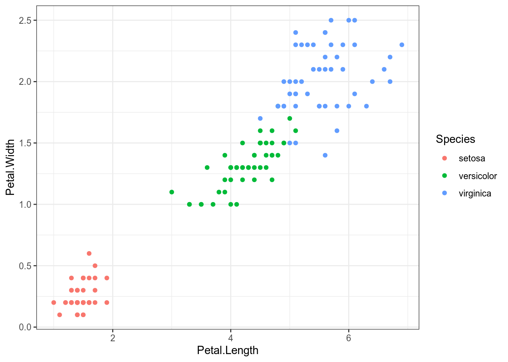
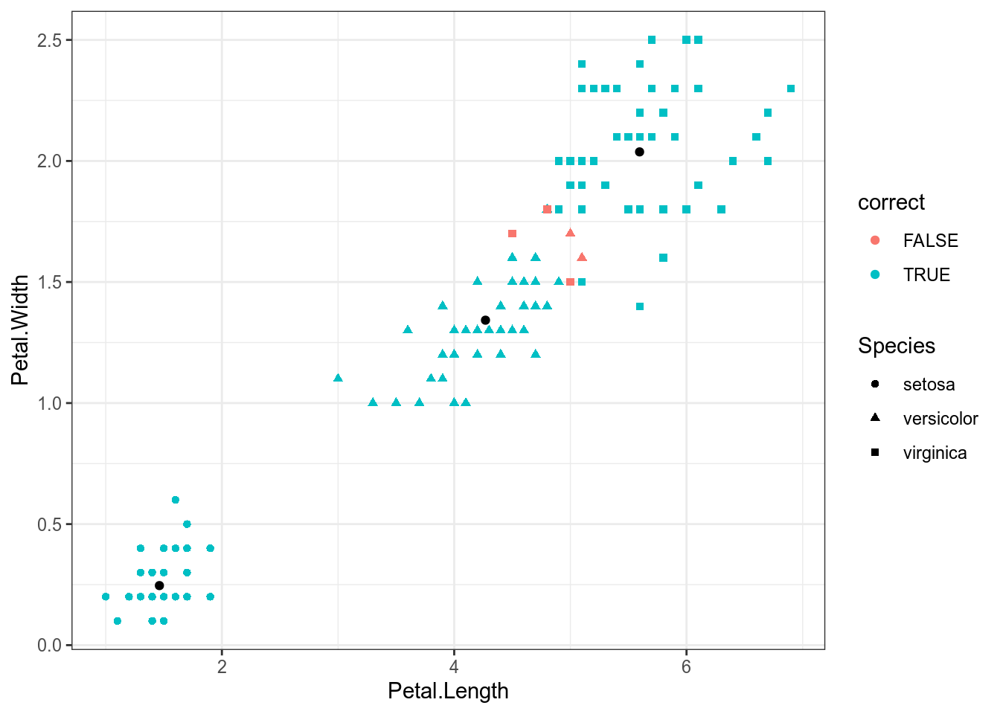
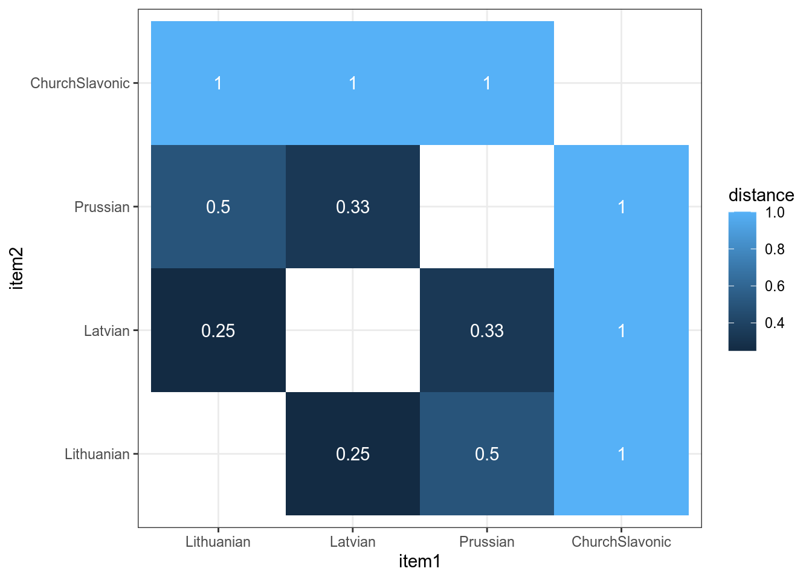
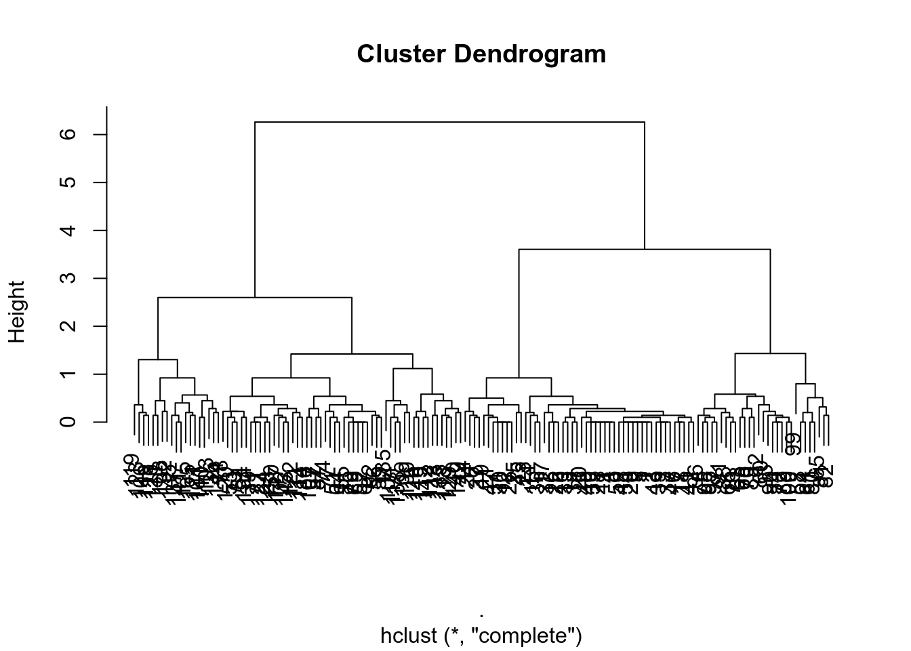
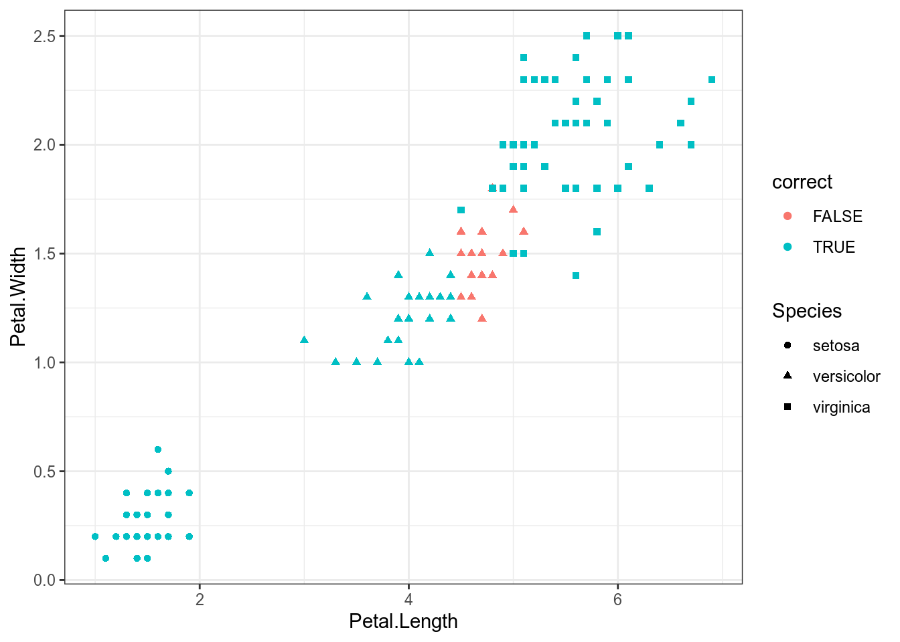

17 Кластеризация
Кластеризация — это не метод, а задача, для решение которой придумано множество алгоритмов. Не существует “правильных”методов кластеризации, так как “clustering is in the eye of the beholder”[Estivill-Castro 2002]. Мы рассмотрим два семейства алгоритмов:
- метод k-средних (k-means)
- иерархическая кластеризация (hierarchical clustering)
17.1 Метод k-средних (k-means)
Алгоритм k-means был разработан в статье [Lloyd 1982]:
- на вход алгоритму подаются данные и k — количество кластеров, на которые эти данные надо поделить;
- произвольно выбираются k точек (центроидов) и рассчитываются ближайшие расстояния (евклидово) от данных точек до центроидов, точки которые ближе всего к некоторому центроиду образуют кластер;
- на основе точек вошедших в кластер строится новый центроид, так чтобы расстояние от всех точек до нового центроида было минимально;
- часть точек становится ближе к новому центроиду и входят в его кластер, а часть от центроида отдаляется и начинают входить в другой/другие кластер/кластеры;
- … все это повторяется, пока на некоторой итерации не происходит изменение положения центроидов.
Давайте посмотрим визуализацию алгоритма k-средних, которую сделал Нафтали Харрис.
17.1.1 Пример
Давайте проанализируем данные из датасета iris:

Для того чтобы запустить метод k-средних в R нужно использовать функцию kmeans(), указав количество кластеров в centers:
library(broom)
set.seed(42)
iris %>%
select(Petal.Length, Petal.Width) %>%
kmeans(centers = 3) ->
kmДавайте посмотрим, насколько хорошо алгоритм k-средних справился с заданием. Я воспользуюсь функцией augment() из пакета broom, чтобы добавить результаты модели к исходным данным (это работает и с регрессиями)
Мы видим, что алгоритм все разбил на три кластера (1, 2, 3), 1 соответствует setosa, 2 соответствует versicolor, 3 соответсвтует virginica (я смотрю с какой группой ассоциировано наибольшое n). Я использую функцию recode_factor() для того чтобы перекодировать переменную .cluster:
km %>%
augment(iris) %>%
mutate(.cluster = recode_factor(.cluster,
`1` = "setosa",
`2` = "versicolor",
`3` = "virginica"),
correct = Species == .cluster) %>%
ggplot(aes(Petal.Length, Petal.Width))+
geom_point(aes(color = correct, shape = Species))+
geom_point(data = data.frame(km$centers)) # центроиды
Цветом выделены несовпадения с исходными данными, как видно, таких случаев всего 5: два цветка virginica были отнесены к классу versicolor, три цветка virginica были отнесены к versicolor. Так что в целом, можно сказать, что алгоритм хорошо справился. Черным обозначены центроиды получившихся кластеров.
17.2 Иерархическая кластеризация
Иерархические кластеризации имеют два типа:
- снизу вверх (agglomerative): каждое наблюдение в начальной позиции является кластером, дальше два ближних кластера соединяются в один, а дендограмма отображает порядки таких соединений.
- сверху вниз (divisive): все наблюдения в начальной позиции являются кластером, который дальше делится на более мелкие, а дендограмма отображает порядки таких разъединений. Алгоритмы иерархической кластеризации требуют на вход матрицы расстояний. Алгоритмов кластерного анализа очень много, так что имеет смысл заглянуть в работу [Gordon 1987] и на страницу CRAN.
17.2.1 Матрица расстояний
Матрица расстояний — это матрица n × n, которая содержит значения меры расстояния/сходства между объектами в метрическом пространстве. Существует уйма мер расстояния/сходства, выбор из которых зависит от типа данных. К сожалению, не существует универсального алгоритма выбора метода, так что это остается на откуп исследователям. Кроме того, схожие методы, зародившиеся в биологии, называют string metric: они определяют расстояния между строками (расстояние Хэмминга, расстояние Левинштейна и т. п.)
17.2.1.1 Бинарные данные
Представим вот такие данные для нескольких языков:
df <- tibble(lang = c("Lithuanian", "Latvian", "Prussian", "ChurchSlavonic"),
word_1 = c(1, 1, 1, 0),
word_2 = c(1, 1, 1, 0),
word_3 = c(1, 1, 0, 0),
word_4 = c(1, 0, 0, 0),
word_5 = c(0, 0, 0, 1))
dfСуществует множество мер для анализа бинарных данных. Самый распространенный — коэффициент Жаккара. Для каждой пары идиомов строим вот такую таблицу:
| идиом i | |||
|---|---|---|---|
| 1 | 0 | ||
| идиом j | 1 | a | b |
| 0 | c | d |
А дальше мы считаем меру сходства:
\[s(i, j)=\frac{a}{a+b+c}\]
В работе [Gower and Legendre 1986] есть и другие методы (14 шт.). Большинство из них есть в функции dist.binary() пакета ade4.
Дальше можно использовать функцию dist() с аргументом binary. Я использую функцию tidy() из пакета broom, чтобы получить таблицу:
Можно визуализировать матрицу расстояния:
df %>%
select(-lang) %>%
dist(method = "binary") %>%
tidy() %>%
mutate(item1 =recode_factor(item1,
`1` = "Lithuanian",
`2` = "Latvian",
`3` = "Prussian",
`4` = "ChurchSlavonic"),
item2 =recode_factor(item2,
`1` = "Lithuanian",
`2` = "Latvian",
`3` = "Prussian",
`4` = "ChurchSlavonic")) %>%
ggplot(aes(item1, item2, fill=distance, label = round(distance, 2))) +
geom_tile()+
geom_text(color = "white")
17.2.2 Расстояние между словами
Мы уже обсуждали расстояние между словами, его тоже можно использовать для кластеризации:
1 2
2 1
3 6 617.2.3 Применение иерархической кластеризации
Объект иерархической кластеризации легко визуализировать:

Также можно выделить какое-то количество кластеров:
Функция cutree() возвращает вектор номеров кластеров в соответсвтии с данными, так что можно строить все предыдущие графики:
Мы видим, что алгоритм все разбил на три кластера (1, 2, 3), 1 соответствует setosa, 2 соответствует virginica и versicolor, 3 соответсвтует versicolor (я смотрю с какой группой ассоциировано наибольшое n). Я использую функцию recode_factor() для того чтобы перекодировать переменную .cluster:
iris %>%
mutate(cluster = cutree(hc, k=3)) %>%
mutate(cluster = recode_factor(cluster,
`1` = "setosa",
`2` = "virginica",
`3` = "versicolor"),
correct = Species == cluster) %>%
ggplot(aes(Petal.Length, Petal.Width))+
geom_point(aes(color = correct, shape = Species))
Мы видим, что ошибки в осовном сгруппированы на границе двух кластеров (видимо, точек меньше, чем 21 потому что они совпадают).